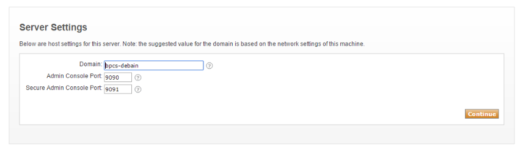
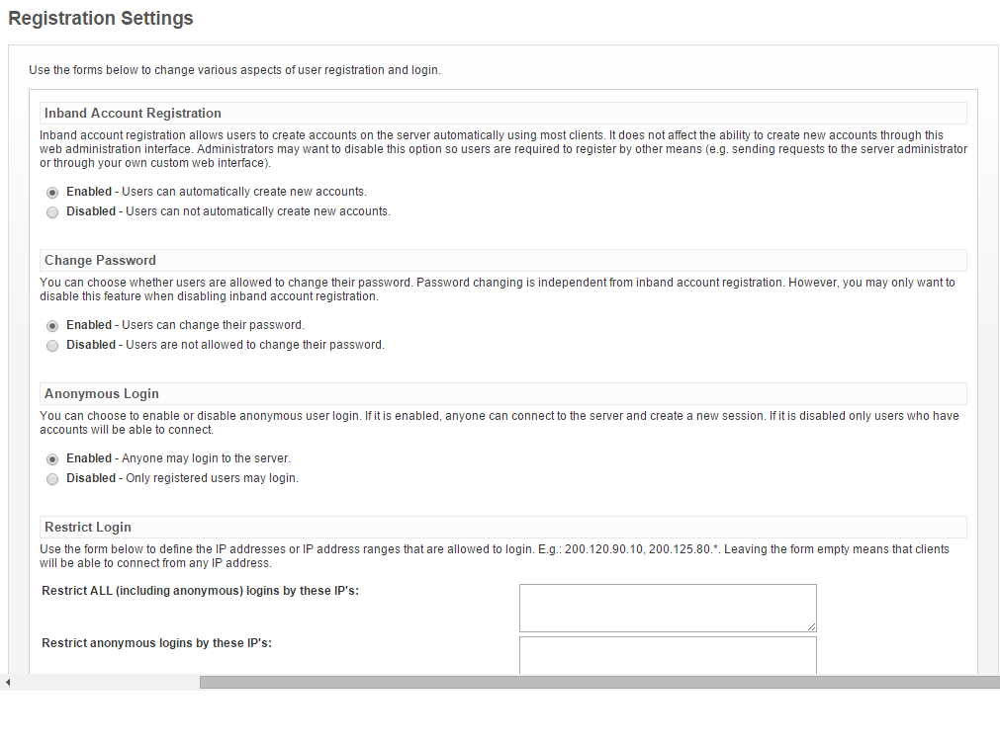
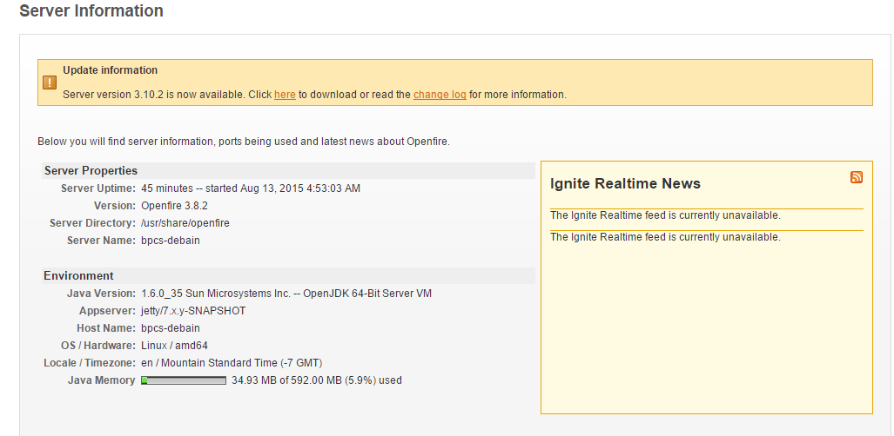
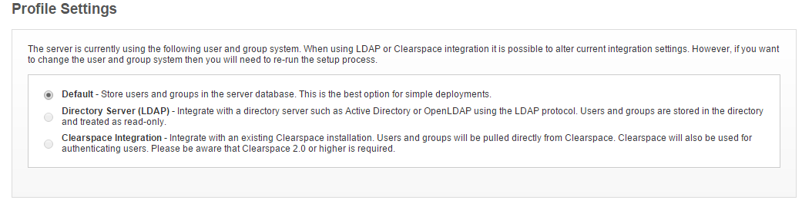

Setting up Openfire XMPP server on Ubuntu and Debian, Miscellaneous, Java,
Install and configure Openfire XMPP Server - Ubuntu, Debian
Difficulty: 2
Time: 20 minutes
This article will help you to understand the installation and configuration of Openfire XMPP Server on Debian or Ubuntu.
Extensible Messaging and Presence Protocol (XMPP) is an XML-based communication protocol for middleware. It enables the near-real-time exchange of structured yet extensible data between any two or more network entities.
Openfire enables collaboration in real time and provides a tightly secured and high performing server. You can use Open Source Apache License for Openfire and can easily set up and configure it using Java.
Openfire disallows chat options.
Install Openfire
- Update the operating system.
sudo apt-get update
- If Java is installed, check the version:
Java -version
- If Java is not installed, run the following command.
sudo apt-get install default-jre
- Download Openfire.
sudo wget -O openfire.deb http://www.igniterealtime.org/downloadServlet?filename=openfire/openfire_3.8.2_all.deb
This command initiates the download of the Openfire Debian package to openfire.deb.
- Install the package.
sudo dpkg --install openfire.deb
-
Visit http://your_IP/9090 on any browser, then Openfire wizard
- The first page will allow you to choose your language while the second page is server setting page where you can define your domain name or IP. See the below image:

- After you finish the setup, log in as an administrator on the Openfire login page.

- Click the Server manager tab to see server information.

- If you want a secure connection to the server, go to Server Settings -> Registration. Then log in and disable the required options.

Start and stop Openfire
Conclusion
You have installed and configured Openfire XMPP server.